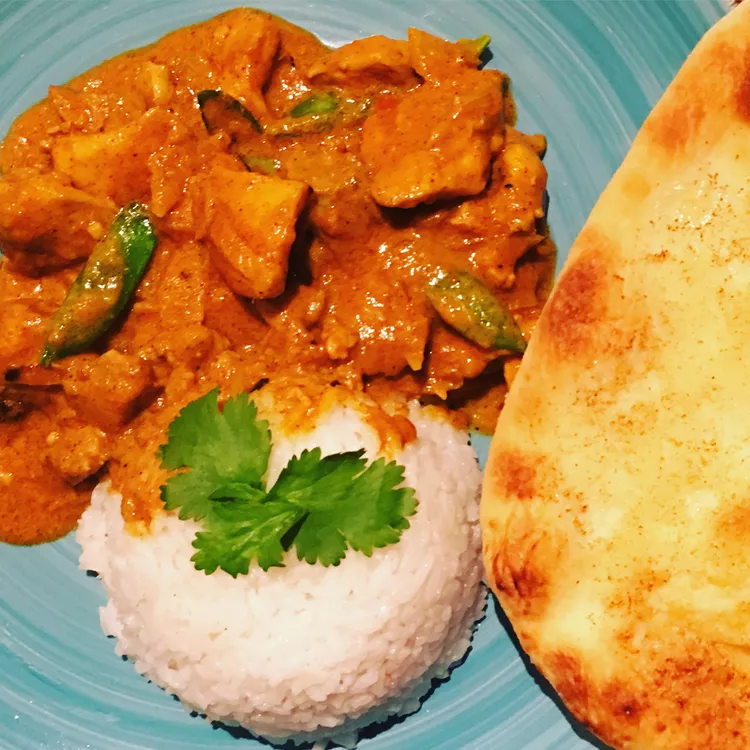

Home-made Butter Chicken

Homemade Butter Chicken Ingredients
A famous dish from the Indian roots.
These are the ingredients you'll need to make this top-rated homemade butter chicken recipe:
- 2 teaspoons garam masala
- 2 teaspoons tandoori masala powder
- 2 teaspoons Madras curry powder
- 1 teaspoon ground cumin
- ½ teaspoon ground cardamom
- ½ teaspoon ground cayenne pepper
- salt and ground black pepper to taste
- 1 ½ pounds boneless, skinless chicken thighs, cut into bite-size pieces
- 3 tablespoons butter, divided
- 1 yellow onion, chopped
- 4 cloves garlic, minced
- 1 tablespoon lemon juice
- 2 teaspoons chopped fresh ginger
- 1 cup tomato puree
- 1 cup half-and-half
- ¼ cup plain yogurt
- ⅓ cup cashews
- 1 bunch fresh cilantro, stems removed
Steps to make the butter chicken:
- Step 1
- Make a spice mix by combining garam masala, tandoori masala, curry powder, cumin, cardamom, cayenne, salt,
and black pepper in a small bowl; set aside.
- Step 2
- Place chicken in a large bowl and add 1/2 of the spice mixture; turn to coat evenly.
- Step 3
- Melt 1 tablespoon butter in a large skillet over medium heat. Add chicken; cook and stir until lightly
browned, about 10 minutes. Remove from heat.
- Step 4
- Melt remaining 2 tablespoons butter in a large saucepan over medium heat. Add onion; cook and stir until
soft and translucent, about 5 minutes. Stir in remainder of the spice mixture, garlic, lemon juice, and
ginger; cook and stir until combined, about 1 minute.
- Step 5
- Stir tomato puree into onion mixture and cook, stirring frequently, about 2 minutes. Pour in half-and-half
and yogurt. Reduce heat to low and simmer sauce, stirring frequently, about 10 minutes. Remove from heat.
- Step 6
- Blend cashews in a blender until finely ground. Add sauce to the blender; puree until smooth.
- Step 7
- Pour blended sauce over chicken in the skillet. Simmer until thickened, 10 to 15 minutes. Garnish with
cilantro.